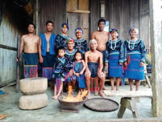

Embark on a journey through Luzon, Philippines, where a vibrant mosaic of indigenous cultures thrives. From the famed rice terraces sculpted by the Ifugao to the intricate textiles woven by the Kalinga, Luzon's indigenous communities weave a rich tapestry of tradition, resilience, and artistic expression.
The Ifugao people are an indigenous group residing in the mountainous province of Ifugao, Philippines. Renowned for their breathtaking rice terraces, a UNESCO World Heritage Site, the Ifugao are skilled wet-rice agriculturalists. Their rich culture emphasizes kinship, family ties, and a unique belief system. Ifugao artistry is evident in their intricate wood carvings, particularly the bulul (rice granary guardians) and the hagabi (prestige benches), as well as their vibrantly colored woven textiles.
Inhabiting the central and eastern mountains of Luzon in the Philippines, the Bontoc people are a resilient indigenous group known for their mastery of wet-rice agriculture. Their terraced fields, irrigated by complex canal systems, are a testament to their ingenuity. Traditionally, Bontoc society was distinguished by leadership figures and social distinction. While headhunting is a practice of the past, their rich culture endures. The Bontoc language sets them apart from neighboring groups, and their artistic expression shines through in woodcarvings, music, and vibrantly woven textiles.
The Kankanaey people are an indigenous group inhabiting the southern mountains of the Cordillera region in Luzon, Philippines. They are known for their impressive rice terraces, some rivaling those of the Ifugao in scale and beauty. Skilled agriculturalists, the Kankanaey have developed a deep understanding of their environment, cultivating diverse crops and raising livestock. Their social structure is complex, with a hierarchy of leadership and strong emphasis on community. Kankanaey culture is rich with vibrant textiles, intricate basketry, and a unique musical tradition featuring instruments like the gangsa (bronze gongs).
The Ibaloi people, residing in the central Cordillera mountains of Luzon, Philippines, are known for their adaptability and resourcefulness. Historically, they practiced both wet-rice agriculture and terrace farming, but also excelled at hunting, gathering, and fishing. Ibaloi society is traditionally egalitarian, with a strong sense of community cooperation. Their rich artistic heritage is evident in their intricate woodcarvings, colorful woven textiles, and traditional dances that celebrate life cycles and community events.
The Kalinga people, inhabiting the rugged mountains of northern Luzon, Philippines, are renowned for their headhunting traditions of the past, a practice deeply rooted in their belief system. Fiercely independent and skilled warriors, the Kalinga have developed a complex social structure with a strong sense of community and intricate peace pacts between villages. Today, they are known for their impressive rice terraces carved into the mountainsides and their vibrant woven textiles.
The Tinguian people, originally inhabiting the coastal areas of Abra in northwestern Luzon, Philippines, are considered the ancestors of the Ilocano people. Skilled farmers and weavers, the Tinguian adapted their way of life based on their location. Those in the lowlands cultivated rice and cotton, while those in the mountain regions practiced swidden agriculture and hunted wild game. Their rich cultural heritage includes a unique language, intricate basketry, and a vibrant oral tradition of epics and folktales.
The Isneg people, residing in the forested foothills of the Cordillera mountains in Luzon, Philippines, are a semi-nomadic group known for their adaptability and hunting prowess. They practice swidden agriculture, cultivating rice and other crops, while also hunting, fishing, and gathering forest products. Isneg society is traditionally egalitarian, with a strong emphasis on family units. Their artistic expression shines through in their intricate beadwork, basketry, and musical instruments like the nose flute.
The Gaddang people inhabit the Cagayan Valley and Isabela province in northeastern Luzon, Philippines. Primarily farmers, the Gaddang cultivate rice, corn, and various vegetables. They are known for their unique way of harvesting rice, using a long pole to cut the stalks and threshing the grain by trampling it with carabao (water buffalo). Gaddang society is traditionally matrilineal, with inheritance passing through the female line. Their rich culture features vibrant woven textiles, elaborate dances, and a unique form of chant used in storytelling and rituals.
The Ilongot people are a semi-nomadic indigenous group residing in the Sierra Madre mountains of northeastern Luzon, Philippines. They practice swidden agriculture, hunting, and gathering, relying heavily on the resources of the forest for their survival. Ilongot society is traditionally egalitarian, with leadership based on experience and skill. Their unique culture includes a complex belief system based on spirits and ancestors, as well as a rich oral tradition of stories and songs passed down through generations.
The Negrito people are an indigenous population group found in the Philippines, with scattered communities throughout Luzon, Visayas, and Mindanao. They are known for their dark skin, curly hair, and typically shorter stature. Negrito groups are predominantly nomadic or semi-nomadic, practicing hunting and gathering in the forests. Their way of life is deeply connected to the natural environment, and their culture is rich with stories, songs, and rituals that reflect this connection. It's important to note that "Negrito" is a broad term encompassing diverse groups, and each community has its own unique language and cultural practices.
The Negrito people are an indigenous population group found in the Philippines, with scattered communities throughout Luzon, Visayas, and Mindanao. They are known for their dark skin, curly hair, and typically shorter stature. Negrito groups are predominantly nomadic or semi-nomadic, practicing hunting and gathering in the forests. Their way of life is deeply connected to the natural environment, and their culture is rich with stories, songs, and rituals that reflect this connection. It's important to note that "Negrito" is a broad term encompassing diverse groups, and each community has its own unique language and cultural practices.